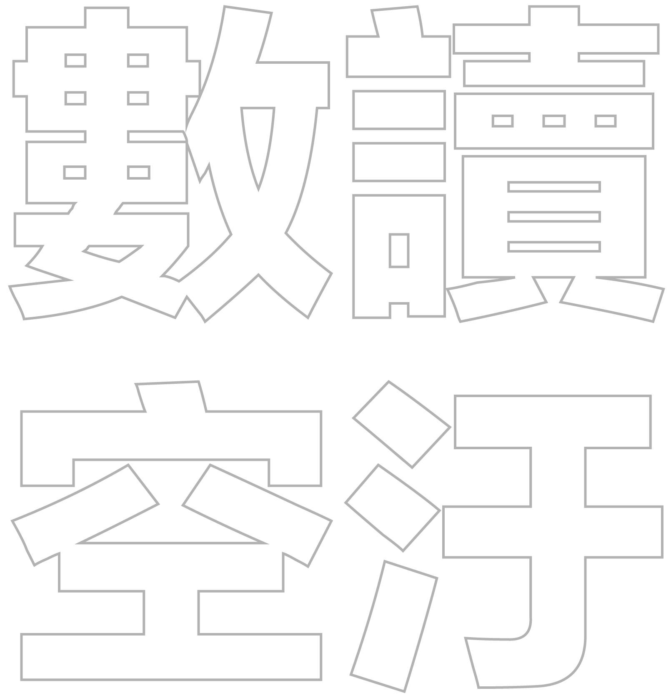

敏感人群
不健康
- --℃
- --%
- -- 公尺/秒

室外空氣污染每年約造成全球300萬人因相關疾病死亡，並且帶來至少數百億美元的經濟損失。
在台灣，空氣污染不只帶走許多人寶貴的性命，也重創了許多人的健康。
更重要的是，空氣污染並不是一項「公平」的公害，居住在中南部的人們，所承受的代價遠比北部都會區的人們要高上許多。
首先，就讓我們以下列這些關鍵數據，和大家一起了解空氣污染吧⋯⋯
根據世界銀行（World Bank）與健康標準評估研究所（Institute for Health Metrics and Evaluation）在2016年9月合作發表的報告指出，室外空氣污染在2013年約造成全球290萬人因相關疾病死亡。經濟合作暨發展組織（OECD）則在2016年6月發表的另一份報告指出，室外空氣污染在2010年時約造成全球3百萬人提早死亡，假如我們再不採取行動，至2060年時這個數字恐攀升至6百萬～9百萬人。
研究指出，空氣污染約在東亞造成220萬人、南亞180萬人、非洲撒哈拉以南60萬人，歐洲及中亞50萬人，美國10萬人死亡。
世界銀行研究報告指出，空氣污染在2013年造成總值約2,250億美元的勞動所得損失，以及高達5兆美元的衛生福利支出。OECD估算，2015年全球與空氣污染相關的醫療保健支出約為210億美元，至於空氣污染關聯疾病所導致的工作日減少，則減少約120億美元的勞動產出。
0 美元
環保署統計資料顯示，一、二期柴油車所排放的廢氣，是台灣是最主要的移動污染源，其累計排放的PM2.5約略等於5座台中火力發電廠，氮氧化物（NOx）部分也逼近4座台中火力發電廠，而揮發性有機物（VOCs）部分，更與3座六輕相當。
根據交通部2016年9月統計資料，目前台灣仍有36,641台一期柴油貨車、45,103台二期柴油貨車，但每年僅淘汰不到4,000台。
國內境外污染9成來自中國，中南部污染主要來自大型工廠、發電廠。
- 1.高雄市小港站 38.4 μg/m3
- 2.高雄市左營站 37.5 μg/m3
- 3.高雄市大寮站 37.4 μg/m3
- 4.雲林縣崙背站 36.4 μg/m3
- 5.高雄市復興站 36.3 μg/m3
- 1.嘉義市 34.4 μg/m3
- 2.台南市 34.2 μg/m3
- 3.高雄市 34.2 μg/m3
- 4.雲林縣 33.1 μg/m3
- 5.嘉義縣 32.0 μg/m3
- 1.雲林縣崙背站 20.7 μg/m3
- 2.南投縣南投站 19.4 μg/m3
- 3.台中市豐原站 19.0 μg/m3
- 4.屏東縣屏東站 18.7 μg/m3
- 5.嘉義縣朴子站 18.5 μg/m3
- 1.雲林縣 18.1 μg/m3
- 2.嘉義縣 17.8 μg/m3
- 3.連江縣 17.4 μg/m3
- 4.台中市 17.3 μg/m3
- 5.南投縣 17.2 μg/m3
空氣污染並不是一項「公平」的公害，居住在中南部的人們，所承受的代價遠比北部都會區的人們要高上許多。其中，雲林、南投與高雄所賠上的健康和性命最多。
從知識走向行動
在開始製作這個專題的時候，我們徵詢了一些朋友、記者的看法，想知道大家對於空汙、PM2.5這個題目，最想看到的會是怎樣的報導。太過冗長的論述、污染整治，有些人覺得太沉悶而興趣缺缺（結果這篇最後也弄得像Ｘ傳媒或Ｘ導者一樣長了啦怎樣）。太過冰冷或者太學術的數據，大家即便當下看了有感，但多半頁面關掉後就忘了。最後，大家最有興趣的，是「面對空污如何自保」，也成了這個題目的起點。
然而，在著手採訪的過程中，我們很清楚發現，面對日益嚴重的污染問題，自保的成本會越來越高，也越來越難實踐。進一步的問題就是，即便可以在相當程度上自保，但這不是解決問題的方式。專題製作的尾聲，我們的設計人員問了一個很重要的問題：「如果自保不能解決問題，那身為一般人，我們可以做些什麼才能幫助減少空污？」
這個問題的解答，其實會變得有點像道德呼籲，或被某些人視為環保魔人。而且事實是，答案大家早就知道了。少開車、多利用大眾運輸工具、愛護大自然，有辦法的話就多種樹，或至少在陽台多種些綠葉植栽、養成節電習慣、少吃點肉、任何形式的浪費都是不環保的，而不環保就會造成污染，勤於監督政府和企業，要求他們和你自己一樣環保。甚至，有興趣的話，大家也可以一起加入 LASS 的空氣監測計畫，一起為空品大數據提供貢獻。
這些答案不會有什麼新意，但對一般人而言，其實最重要的答案，就是那些我們早就知道，卻不容易做到的事情。
2017年1月11日，台中國立自然科學博物館舉辦「島嶼浮塵・PM2.5視界」特展，前中研院長李遠哲也出席了開幕儀式。李遠哲在致詞時說，面對空汙，我們該是覺醒的時候，「如果我們的知識不能轉化到行動的話，都是空談」。
特別感謝：黃旭、陳又維、郭凱迪、簡大詠、曾耀寰、陳伶志、蔡玉萱
鏡傳媒 MirrorMedia 2017